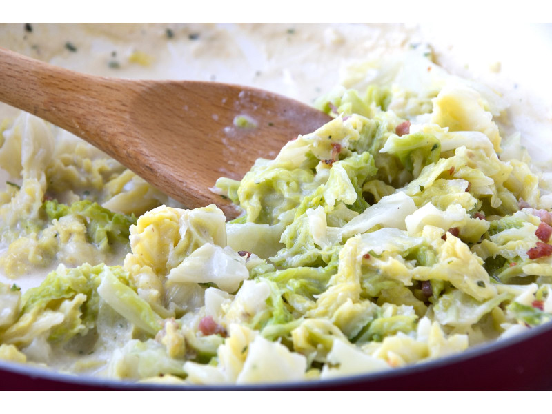

Wirsing Gemüse

Description
Hearty side dish, will melt your hearth.
Ingredients
- 1 kg Savoy,cleaned, finely chopped
- 1 chopped Onion
- 100g Beacon
- 1 tsp. butter
- 75 ml milk
- 250 ml broth
- 1 tbsp flour
- 100ml cream
- salt and pepper
- nutmeg
Steps
- Lightly brown the onion,
finely chopped bacon and
butter in a saucepan over
medium heat.
- Add the chopped savoy cabbage,
fill up with the hot meat broth
and let everything steam until
soft over a moderate heat.
- Mix the flour with the milk until
smooth and add to the cooked
cabbage.
- Boil briefly. Season to taste with pepper,
salt and nutmeg.
- Finally, fold the cream under the
finished, no longer boiling vegetables.
- Serve with boiled potatoes and coarse
bratwurst or other pan-fried meat.